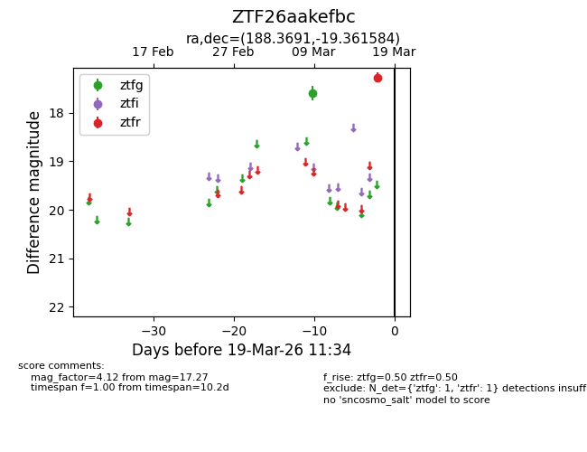
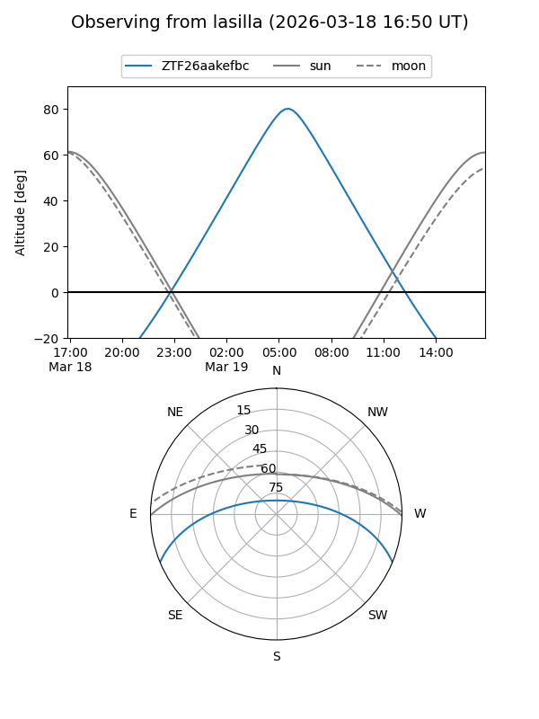
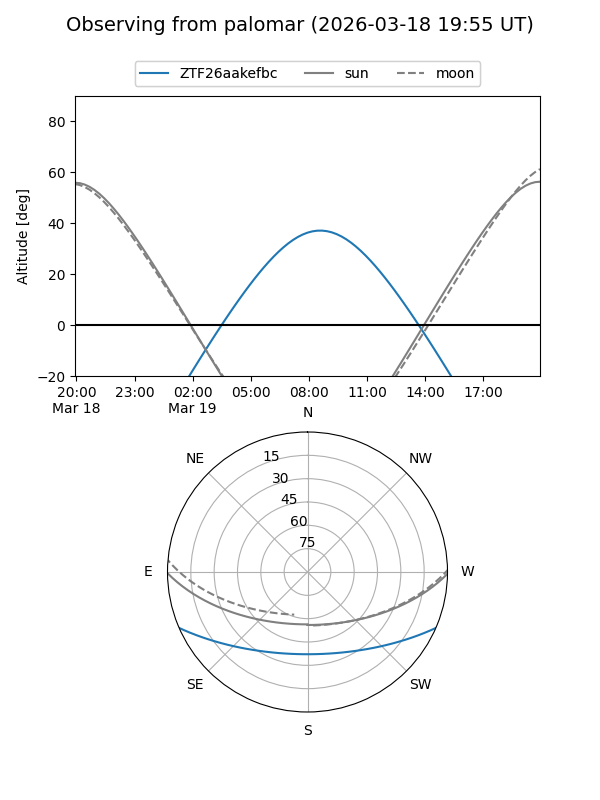

ZTF26aakefbc
Target ZTF26aakefbc at 2026-03-19 11:36
Aliases and brokers:
FINK: link
Lasair: link
ALeRCE: link
alt names
ZTF26aakefbc (ztf,fink_ztf)
Coordinates:
equatorial (ra, dec) = 188.3691,-19.36158
equatorial (HMS+DMS) = 12:33:28.57,-19:21:41.70
galactic (l, b) = (297.1061,+43.30689)
Flags:
Photometry:
last ztfg=17.59, ztfr=17.27
1 ztfg, 1 ztfr detections
Lightcurve

Visibility


Additional plots